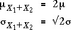

Sum and difference of two variables
Applying the result about the sum of a random sample to a sample of size n = 2, X1 and X2,

If we generalise by allowing X1 and X2 to have different means, µ1 and µ2, but the same σ,

A similar result holds for the difference between X1 and X2:

If X1 and X2 are independent and have normal distributions, their sum and difference are also normally distributed.